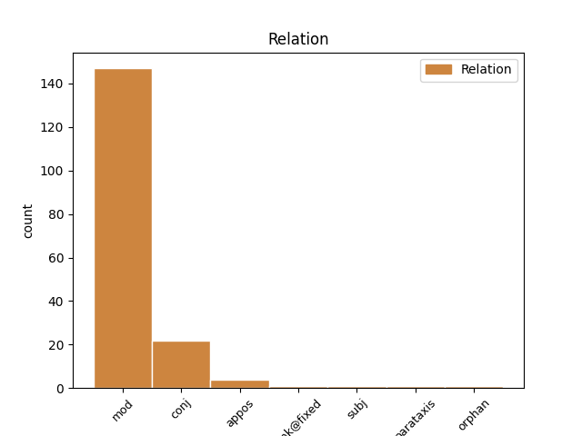
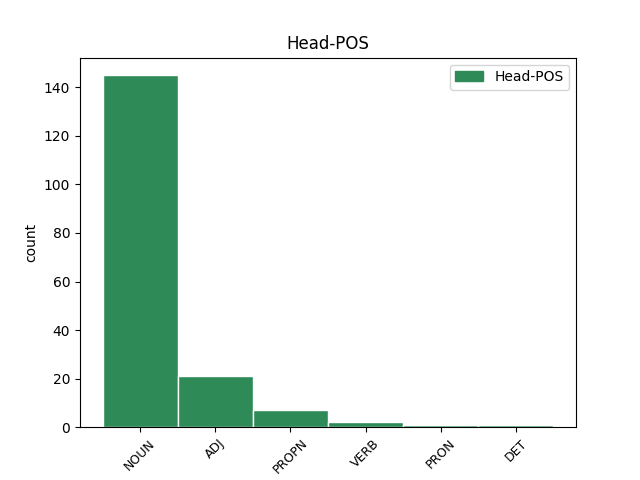
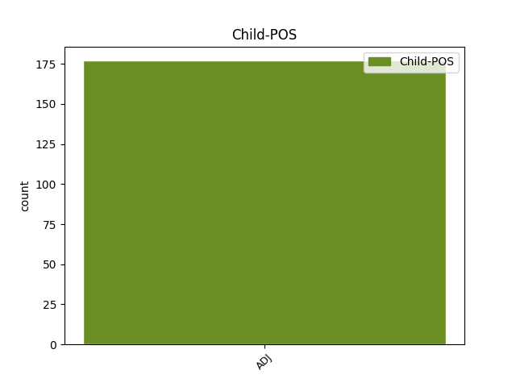

Distribution of features within this leaf



Agreement Rules sorted by frequency.
- When the dependent token is the modifer(mod) of the head token, and the dependent token is ADJ.
1 Sąjūdžio _ _ _ _ 0 _ _ _
2 ir _ _ _ _ 0 _ _ _
3 ankstyvosios ankstyvas ADJ JJL Case=Gen|Definite=Def|Degree=Pos|Gender=Fem|Number=Sing 4 mod _ En=early
4 nepriklausomybės nepriklausomybė NOUN NN Case=Gen|Gender=Fem|Number=Sing 0 _ _ _
5 laikais _ _ _ _ 0 _ _ _
6 kartais _ _ _ _ 0 _ _ _
7 atrodė _ _ _ _ 0 _ _ _
8 , _ _ _ _ 0 _ _ _
9 jog _ _ _ _ 0 _ _ _
10 tie _ _ _ _ 0 _ _ _
11 nesutarimai _ _ _ _ 0 _ _ _
12 pamažu _ _ _ _ 0 _ _ _
13 , _ _ _ _ 0 _ _ _
14 bet _ _ _ _ 0 _ _ _
15 sėkmingai _ _ _ _ 0 _ _ _
16 sprendžiasi _ _ _ _ 0 _ _ _
17 . _ _ _ _ 0 _ _ _
1 Savarankiškas _ _ _ _ 0 _ _ _
2 , _ _ _ _ 0 _ _ _
3 nieko _ _ _ _ 0 _ _ _
4 neribojamas _ _ _ _ 0 _ _ _
5 valstybingumas _ _ _ _ 0 _ _ _
6 laikomas _ _ _ _ 0 _ _ _
7 absoliučia absoliutus ADJ JJL Case=Ins|Definite=Ind|Degree=Pos|Gender=Fem|Number=Sing 0 _ _ _
8 ir _ _ _ _ 0 _ _ _
9 pirmąja pirmas ADJ ORD Case=Ins|Definite=Ind|Degree=Pos|Gender=Fem|Number=Sing 7 conj _ En=first
10 vertybe _ _ _ _ 0 _ _ _
11 , _ _ _ _ 0 _ _ _
12 nepalyginti _ _ _ _ 0 _ _ _
13 svarbesne _ _ _ _ 0 _ _ _
14 už _ _ _ _ 0 _ _ _
15 demokratiją _ _ _ _ 0 _ _ _
16 , _ _ _ _ 0 _ _ _
17 žmogiškumą _ _ _ _ 0 _ _ _
18 ar _ _ _ _ 0 _ _ _
19 sveiką _ _ _ _ 0 _ _ _
20 protą _ _ _ _ 0 _ _ _
21 . _ _ _ _ 0 _ _ _
1 Savarankiškas _ _ _ _ 0 _ _ _
2 , _ _ _ _ 0 _ _ _
3 nieko _ _ _ _ 0 _ _ _
4 neribojamas _ _ _ _ 0 _ _ _
5 valstybingumas _ _ _ _ 0 _ _ _
6 laikomas _ _ _ _ 0 _ _ _
7 absoliučia _ _ _ _ 0 _ _ _
8 ir _ _ _ _ 0 _ _ _
9 pirmąja _ _ _ _ 0 _ _ _
10 vertybe vertybė NOUN NN Case=Ins|Gender=Fem|Number=Sing 0 _ _ _
11 , _ _ _ _ 0 _ _ _
12 nepalyginti _ _ _ _ 0 _ _ _
13 svarbesne svarbus ADJ JJR Case=Ins|Definite=Ind|Degree=Cmp|Gender=Fem|Number=Sing 10 appos _ En=important
14 už _ _ _ _ 0 _ _ _
15 demokratiją _ _ _ _ 0 _ _ _
16 , _ _ _ _ 0 _ _ _
17 žmogiškumą _ _ _ _ 0 _ _ _
18 ar _ _ _ _ 0 _ _ _
19 sveiką _ _ _ _ 0 _ _ _
20 protą _ _ _ _ 0 _ _ _
21 . _ _ _ _ 0 _ _ _
1 Globalizmas _ _ _ _ 0 _ _ _
2 esąs _ _ _ _ 0 _ _ _
3 tik _ _ _ _ 0 _ _ _
4 plėšraus _ _ _ _ 0 _ _ _
5 kapitalizmo _ _ _ _ 0 _ _ _
6 priedanga _ _ _ _ 0 _ _ _
7 ir _ _ _ _ 0 _ _ _
8 pseudonimas _ _ _ _ 0 _ _ _
9 , _ _ _ _ 0 _ _ _
10 o _ _ _ _ 0 _ _ _
11 iš _ _ _ _ 0 _ _ _
12 to _ _ _ _ 0 _ _ _
13 plėšraus _ _ _ _ 0 _ _ _
14 kapitalizmo _ _ _ _ 0 _ _ _
15 turi _ _ _ _ 0 _ _ _
16 naudos _ _ _ _ 0 _ _ _
17 tik _ _ _ _ 0 _ _ _
18 tamsios _ _ _ _ 0 _ _ _
19 internacionalinės _ _ _ _ 0 _ _ _
20 jėgos _ _ _ _ 0 _ _ _
21 – _ _ _ _ 0 _ _ _
22 paprastai _ _ _ _ 0 _ _ _
23 dėl _ _ _ _ 0 _ _ _
24 viso visas DET DT Case=Gen|Gender=Masc|Number=Sing 0 _ _ _
25 pikto piktas ADJ JJL Case=Gen|Definite=Ind|Degree=Pos|Gender=Masc|Number=Sing 24 unk@fixed _ En=just_in_case
26 nesakoma _ _ _ _ 0 _ _ _
27 , _ _ _ _ 0 _ _ _
28 bet _ _ _ _ 0 _ _ _
29 gana _ _ _ _ 0 _ _ _
30 aiškiai _ _ _ _ 0 _ _ _
31 duodama _ _ _ _ 0 _ _ _
32 suprasti _ _ _ _ 0 _ _ _
33 , _ _ _ _ 0 _ _ _
34 kad _ _ _ _ 0 _ _ _
35 tai _ _ _ _ 0 _ _ _
36 žydai _ _ _ _ 0 _ _ _
37 ( _ _ _ _ 0 _ _ _
38 pavyzdžiui _ _ _ _ 0 _ _ _
39 Sorosas _ _ _ _ 0 _ _ _
40 ) _ _ _ _ 0 _ _ _
41 . _ _ _ _ 0 _ _ _
1 Tokios _ _ _ _ 0 _ _ _
2 grupės _ _ _ _ 0 _ _ _
3 ne _ _ _ _ 0 _ _ _
4 tik _ _ _ _ 0 _ _ _
5 dalija _ _ _ _ 0 _ _ _
6 šalies _ _ _ _ 0 _ _ _
7 gyventojus _ _ _ _ 0 _ _ _
8 į _ _ _ _ 0 _ _ _
9 lietuvius _ _ _ _ 0 _ _ _
10 ir _ _ _ _ 0 _ _ _
11 nelietuvius _ _ _ _ 0 _ _ _
12 , _ _ _ _ 0 _ _ _
13 bet _ _ _ _ 0 _ _ _
14 ir _ _ _ _ 0 _ _ _
15 pačius _ _ _ _ 0 _ _ _
16 lietuvius lietuvis ADJ JJL Case=Acc|Definite=Ind|Degree=Pos|Gender=Masc|Number=Plur 19 orphan _ En=Lithianian
17 – _ _ _ _ 0 _ _ _
18 į _ _ _ _ 0 _ _ _
19 gerus geras ADJ JJL Case=Acc|Definite=Ind|Degree=Pos|Gender=Masc|Number=Plur 0 _ _ _
20 ir _ _ _ _ 0 _ _ _
21 blogus _ _ _ _ 0 _ _ _
22 , _ _ _ _ 0 _ _ _
23 tikrus _ _ _ _ 0 _ _ _
24 ir _ _ _ _ 0 _ _ _
25 kosmopolitinius _ _ _ _ 0 _ _ _
26 , _ _ _ _ 0 _ _ _
27 net _ _ _ _ 0 _ _ _
28 „ _ _ _ _ 0 _ _ _
29 genetiškus _ _ _ _ 0 _ _ _
30 patriotus _ _ _ _ 0 _ _ _
31 “ _ _ _ _ 0 _ _ _
32 ir _ _ _ _ 0 _ _ _
33 „ _ _ _ _ 0 _ _ _
34 genetiškus _ _ _ _ 0 _ _ _
35 išdavikus _ _ _ _ 0 _ _ _
36 “ _ _ _ _ 0 _ _ _
37 . _ _ _ _ 0 _ _ _
1 Šiandien _ _ _ _ 0 _ _ _
2 galima _ _ _ _ 0 _ _ _
3 būti _ _ _ _ 0 _ _ _
4 lietuviu _ _ _ _ 0 _ _ _
5 ir _ _ _ _ 0 _ _ _
6 vaisingai _ _ _ _ 0 _ _ _
7 dalyvauti _ _ _ _ 0 _ _ _
8 Lietuvos _ _ _ _ 0 _ _ _
9 gyvenime _ _ _ _ 0 _ _ _
10 net _ _ _ _ 0 _ _ _
11 tada _ _ _ _ 0 _ _ _
12 , _ _ _ _ 0 _ _ _
13 jei _ _ _ _ 0 _ _ _
14 tavo _ _ _ _ 0 _ _ _
15 svarbiausias svarbus ADJ JJS Case=Nom|Definite=Ind|Degree=Sup|Gender=Masc|Number=Sing 16 subj _ En=main
16 būstas būstas NOUN NN Case=Nom|Gender=Masc|Number=Sing 0 _ _ _
17 yra _ _ _ _ 0 _ _ _
18 kitame _ _ _ _ 0 _ _ _
19 kontinente _ _ _ _ 0 _ _ _
20 . _ _ _ _ 0 _ _ _
1 Beje _ _ _ _ 0 _ _ _
2 , _ _ _ _ 0 _ _ _
3 ateityje ateitis NOUN NN Case=Loc|Gender=Fem|Number=Sing 0 _ _ _
4 ( _ _ _ _ 0 _ _ _
5 tiesa _ _ _ _ 0 _ _ _
6 , _ _ _ _ 0 _ _ _
7 gana _ _ _ _ 0 _ _ _
8 tolimoje tolimas ADJ JJL Case=Loc|Definite=Ind|Degree=Pos|Gender=Fem|Number=Sing 3 parataxis _ En=distant|SpaceAfter=No
9 ) _ _ _ _ 0 _ _ _
10 nepriklausomas _ _ _ _ 0 _ _ _
11 valstybes _ _ _ _ 0 _ _ _
12 iš _ _ _ _ 0 _ _ _
13 viso _ _ _ _ 0 _ _ _
14 galbūt _ _ _ _ 0 _ _ _
15 pavaduos _ _ _ _ 0 _ _ _
16 globalinė _ _ _ _ 0 _ _ _
17 sąjungą _ _ _ _ 0 _ _ _
18 , _ _ _ _ 0 _ _ _
19 kurios _ _ _ _ 0 _ _ _
20 bruožai _ _ _ _ 0 _ _ _
21 pastebimi _ _ _ _ 0 _ _ _
22 ir _ _ _ _ 0 _ _ _
23 dabar _ _ _ _ 0 _ _ _
24 : _ _ _ _ 0 _ _ _
25 tai _ _ _ _ 0 _ _ _
26 anaiptol _ _ _ _ 0 _ _ _
27 nereiškia _ _ _ _ 0 _ _ _
28 , _ _ _ _ 0 _ _ _
29 kad _ _ _ _ 0 _ _ _
30 išnyks _ _ _ _ 0 _ _ _
31 tautiniai _ _ _ _ 0 _ _ _
32 skirtingumai _ _ _ _ 0 _ _ _
33 , _ _ _ _ 0 _ _ _
34 kalbos _ _ _ _ 0 _ _ _
35 ir _ _ _ _ 0 _ _ _
36 tradicijos _ _ _ _ 0 _ _ _
37 . _ _ _ _ 0 _ _ _
Disagree Examples:
1 Rašytoja _ _ _ _ 0 _ _ _
2 Vanda _ _ _ _ 0 _ _ _
3 Juknaitė _ _ _ _ 0 _ _ _
4 šeštadienį _ _ _ _ 0 _ _ _
5 Vytauto _ _ _ _ 0 _ _ _
6 Didžiojo _ _ _ _ 0 _ _ _
7 universitete _ _ _ _ 0 _ _ _
8 Kaune _ _ _ _ 0 _ _ _
9 paskelbta _ _ _ _ 0 _ _ _
10 2016-ųjų 2016-as ADJ ORD Case=Gen|Definite=Ind|Degree=Pos|Gender=Masc|Number=Plur 12 mod _ En=2016
11 Tolerancijos _ _ _ _ 0 _ _ _
12 žmogumi žmogus NOUN NN Case=Ins|Gender=Masc|Number=Sing 0 _ _ _
13 . _ _ _ _ 0 _ _ _
1 Ši _ _ _ _ 0 _ _ _
2 kasmetinė _ _ _ _ 0 _ _ _
3 nominacija _ _ _ _ 0 _ _ _
4 skiriama _ _ _ _ 0 _ _ _
5 asmeniui _ _ _ _ 0 _ _ _
6 , _ _ _ _ 0 _ _ _
7 stojusiam _ _ _ _ 0 _ _ _
8 prieš _ _ _ _ 0 _ _ _
9 ksenofobijos _ _ _ _ 0 _ _ _
10 bei _ _ _ _ 0 _ _ _
11 antisemitizmo _ _ _ _ 0 _ _ _
12 , _ _ _ _ 0 _ _ _
13 kitaminčių _ _ _ _ 0 _ _ _
14 , _ _ _ _ 0 _ _ _
15 kitatikių _ _ _ _ 0 _ _ _
16 bei _ _ _ _ 0 _ _ _
17 kitataučių _ _ _ _ 0 _ _ _
18 persekiojimą _ _ _ _ 0 _ _ _
19 , _ _ _ _ 0 _ _ _
20 pasisakiusiam _ _ _ _ 0 _ _ _
21 prieš _ _ _ _ 0 _ _ _
22 smurto _ _ _ _ 0 _ _ _
23 , _ _ _ _ 0 _ _ _
24 prievartos _ _ _ _ 0 _ _ _
25 ir _ _ _ _ 0 _ _ _
26 radikalizmo _ _ _ _ 0 _ _ _
27 apraiškas apraiška NOUN NN Case=Acc|Gender=Fem|Number=Plur 0 _ _ _
28 visuomeniniame visuomeninis ADJ JJL Case=Loc|Definite=Ind|Degree=Pos|Gender=Masc|Number=Sing 27 mod _ En=public
29 Lietuvos _ _ _ _ 0 _ _ _
30 gyvenime _ _ _ _ 0 _ _ _
31 . _ _ _ _ 0 _ _ _
1 Strepsiadas _ _ _ _ 0 _ _ _
2 – _ _ _ _ 0 _ _ _
3 patriarchališkai patriarchališkas ADJ JJL Case=Dat|Definite=Ind|Degree=Pos|Gender=Fem|Number=Sing 5 mod _ En=partriarchal
4 doras _ _ _ _ 0 _ _ _
5 žemdirbys žemdirbys NOUN NN Case=Nom|Gender=Masc|Number=Sing 0 _ _ _
6 , _ _ _ _ 0 _ _ _
7 kurio _ _ _ _ 0 _ _ _
8 sūnus _ _ _ _ 0 _ _ _
9 , _ _ _ _ 0 _ _ _
10 kaip _ _ _ _ 0 _ _ _
11 paprastai _ _ _ _ 0 _ _ _
12 būna _ _ _ _ 0 _ _ _
13 , _ _ _ _ 0 _ _ _
14 jau _ _ _ _ 0 _ _ _
15 pasidavė _ _ _ _ 0 _ _ _
16 naujoms _ _ _ _ 0 _ _ _
17 madoms _ _ _ _ 0 _ _ _
18 ir _ _ _ _ 0 _ _ _
19 dėl _ _ _ _ 0 _ _ _
20 to _ _ _ _ 0 _ _ _
21 kelia _ _ _ _ 0 _ _ _
22 tėvui _ _ _ _ 0 _ _ _
23 nerimą _ _ _ _ 0 _ _ _
24 . _ _ _ _ 0 _ _ _
1 Tuo _ _ _ _ 0 _ _ _
2 tarpu _ _ _ _ 0 _ _ _
3 Sokratas _ _ _ _ 0 _ _ _
4 , _ _ _ _ 0 _ _ _
5 nors _ _ _ _ 0 _ _ _
6 ir _ _ _ _ 0 _ _ _
7 buvo _ _ _ _ 0 _ _ _
8 vedęs _ _ _ _ 0 _ _ _
9 , _ _ _ _ 0 _ _ _
10 atrodo _ _ _ _ 0 _ _ _
11 , _ _ _ _ 0 _ _ _
12 nevengė _ _ _ _ 0 _ _ _
13 nuotykių _ _ _ _ 0 _ _ _
14 su _ _ _ _ 0 _ _ _
15 gražių gražus ADJ JJL Case=Gen|Definite=Ind|Degree=Pos|Gender=Masc|Number=Plur 16 mod _ En=beautiful
16 jaunikaičiu jaunikaitis NOUN NN Case=Ins|Gender=Masc|Number=Sing 0 _ _ _
17 Alkibiadu _ _ _ _ 0 _ _ _
18 ir _ _ _ _ 0 _ _ _
19 kitais _ _ _ _ 0 _ _ _
20 . _ _ _ _ 0 _ _ _
1 Esu _ _ _ _ 0 _ _ _
2 skaitęs _ _ _ _ 0 _ _ _
3 – _ _ _ _ 0 _ _ _
4 tiesa _ _ _ _ 0 _ _ _
5 , _ _ _ _ 0 _ _ _
6 ne _ _ _ _ 0 _ _ _
7 lietuvių lietuvis ADJ JJL Case=Gen|Definite=Ind|Degree=Pos|Gender=Masc|Number=Plur 8 mod _ En=Lithianian
8 spaudoje spauda NOUN NN Case=Loc|Gender=Fem|Number=Sing 0 _ _ _
9 , _ _ _ _ 0 _ _ _
10 - _ _ _ _ 0 _ _ _
11 interviu _ _ _ _ 0 _ _ _
12 su _ _ _ _ 0 _ _ _
13 mergina _ _ _ _ 0 _ _ _
14 iš _ _ _ _ 0 _ _ _
15 Europos _ _ _ _ 0 _ _ _
16 , _ _ _ _ 0 _ _ _
17 kuri _ _ _ _ 0 _ _ _
18 atsako _ _ _ _ 0 _ _ _
19 į _ _ _ _ 0 _ _ _
20 klausimą _ _ _ _ 0 _ _ _
21 , _ _ _ _ 0 _ _ _
22 kuo _ _ _ _ 0 _ _ _
23 skiriasi _ _ _ _ 0 _ _ _
24 Rytų _ _ _ _ 0 _ _ _
25 Europos _ _ _ _ 0 _ _ _
26 politinė _ _ _ _ 0 _ _ _
27 scena _ _ _ _ 0 _ _ _
28 nuo _ _ _ _ 0 _ _ _
29 Vakarų _ _ _ _ 0 _ _ _
30 politinės _ _ _ _ 0 _ _ _
31 scenos _ _ _ _ 0 _ _ _
32 . _ _ _ _ 0 _ _ _